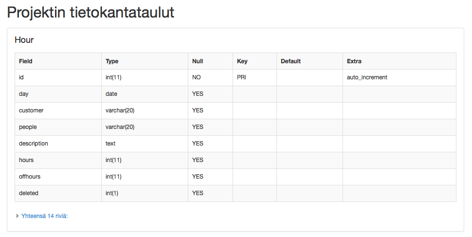
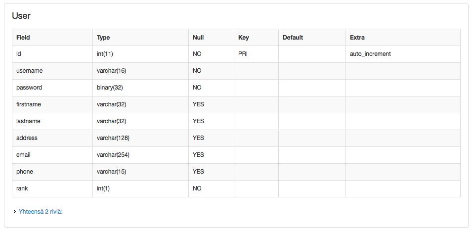

Elias Nygren: Tietokantasovelluksen esittelysivu
Yleisiä linkkejä
Työn aihe
Kirjautumistunnuksia testausta varten
- Tunnus: user1
- Salasana: user1
Ympäristöistä
Projektissa on käytössä UpCloudin virtuaalipalvelimia Ubuntu 12.04 kanssa. Koko LAMP stack on siis itse konfiguroitu
- sekä tietokantapalvelimelle (Ubuntu 12.04 + MySQL Server 5.5)
- että web-palvelimelle (Ubuntu 12.04 + Apache2 + PHP5 + PDO MySQL)
Viikko4w lisätiedot:
- CRUD operaatiot resurssilla asiakastunnit (customerHours) - HUOM! Tällä myös monesta moneen suhde user kanssa
Viikko2 lisätiedot:
- HTML sivut toteutettu suoraan sovellukseen kontrollereineen, toiminnallisuutta ja tietokantayhteyksiä ei läheskään joka näkymässä!
- Monesta moneen suhde "customerHours" ja "user" taulun välille (asiakkaalle laskutettavien tuntien kirjanpito, jossa yhtä laskutettavaa kokonaisuutta kohden voi olla monta eri käyttäjää. Käyttäjä voi kuulua moneen asiakastuntiin ja asiakastunti moneen käyttäjään)
- SQL lauseet ovat testattuja, mutta käytössä oleva tietokantaserveri ei vielä käytä ko. lauseilla muodostettua tietokantaa
Viikko3 lisätiedot:
- Sovellus toimii vain sisäänkirjautuneena, koska kyseessä on yrityksen sisäinen työkalu
- Kirjautuminen toimii tietokannan kautta, moni muu asia ei vielä...
- Tässä vielä connection test screenshotit (otettu 30.3. klo 22:26 toimivasta connection test ohjelmasta), jos jostain syystä ei tarkastustilanteessa toimi (jostain syystä viime viikolla tarkastajalla ei toiminut):

